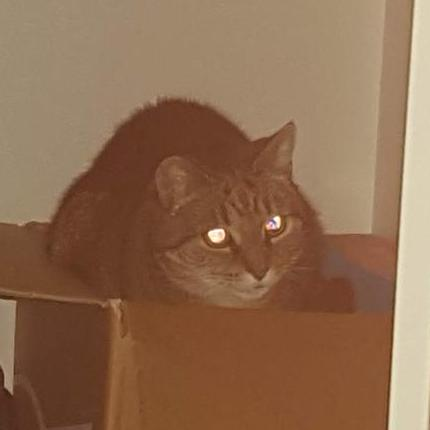

Gus - gus@ef.je | github.com/Gaunsessa

Growing and squeezing linear algebra
Education | Work | Projects | Photos
Education
Work history
Angus Chapman -
https://ef.je | github.com/Gaunsessa
Growing and squeezing linear algebra
Gus - gus@ef.je | github.com/Gaunsessa

Growing and squeezing linear algebra
Education | Work | Projects | Photos
Angus Chapman -
https://ef.je | github.com/Gaunsessa
Growing and squeezing linear algebra
Mandarin learning platform with a monkeytype-esk gameplay loop.
Currently building a LLM based RAG pipeline for streamlining language learning.
Automated music transcription for Taiko no Tatsujin.
Trained a LSTM based neural network to automatically generate musical charts.
Tour guide for the lost dwellings of GeoCities.
Created a recommender system for the lost websites of GeoCities, used novel LLM based automated systems to process the raw big data upwards of five terabytes.
Bringing color to a black and white toy camera from the 80s.
Distributivity trained a bespoke AI model to colorized black and white Gameboy photos.
Many other smaller projects spanning back years. Please see my Github.
Created during the 2nd 2025 Terrible Ideas Hackathon. ChatHuman shows you what life is like as an LLM.
Hosted Version: ChatHuman.net
Github: Gaunsessa/ChatHuman
Turns a LLM into a webserver.
Given any prompt the LLM will generate raw HTTP responses.
Hosted Version: vibe.ef.je
Github: Gaunsessa/vibehttp
Dino VS is an online multiplayer 1v1 site for the chromium dinosaur game.
Hosted Version: dino.ef.je
Github: Gaunsessa/dinovs
Some game jams I have completed in the past with a mate.
Climb Lord: itch.io/climblord
Keyboard Salad: itch.io/keyboard-salad
Some small projects I've done.
Odin Errors: Gaunsessa/OdinErrors
visnek: Gaunsessa/visnek
img2ascii: Gaunsessa/img2ascii
Mandarin learning platform with a monkeytype-esk gameplay loop.
Currently building a LLM based RAG pipeline for streamlining language learning.
Automated music transcription for Taiko no Tatsujin.
Trained a LSTM based neural network to automatically generate musical charts.
Tour guide for the lost dwellings of GeoCities.
Created a recommender system for the lost websites of GeoCities, used novel LLM based automated systems to process the raw big data upwards of five terabytes.
Bringing color to a black and white toy camera from the 80s.
Distributivity trained a bespoke AI model to colorized black and white Gameboy photos.
Many other smaller projects spanning back years. Please see my Github.